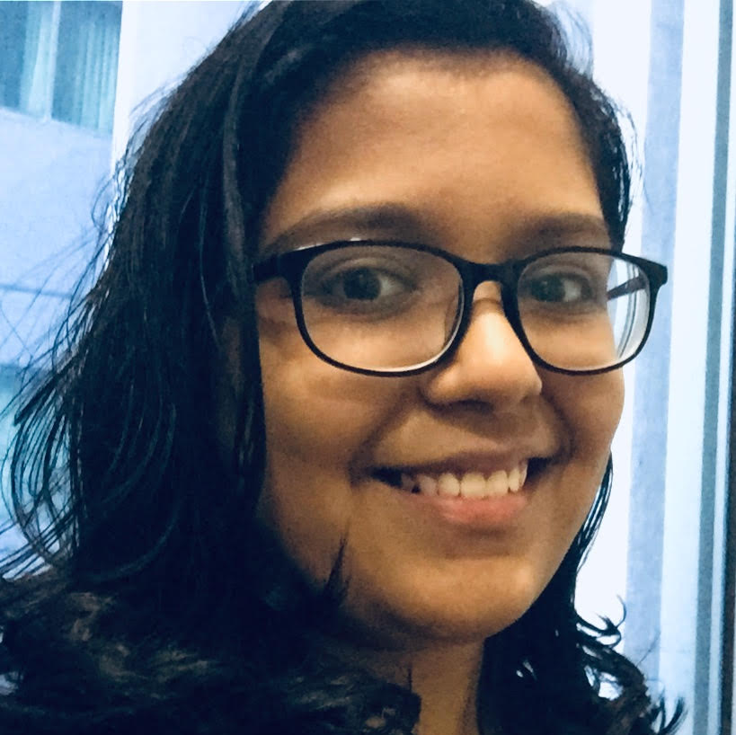

|

Priasha Choudhary Year 11 • 23priashac@alice-smith.edu.my |
|
| Biography | |
|
I’ve been at KLASS since 2018 though I grew up in East Malaysia. I'm a certified bookworm. I have a growing interest in areas of Biology and I'm fascinated with Psychology (how the brain works), Computer Science and Current Affairs. My Spotify favourites includes songs from a range of artists and some great podcasts. I admire great quotes but I despise cheesy and overused ones. I’m open minded and most topics interest me.This will be my first attempt at writing for the public and I hope to cover a range of topics in my work. | |
| Recent Posts | |